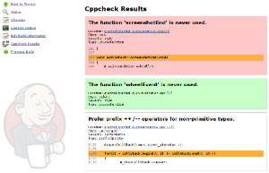
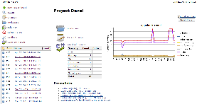
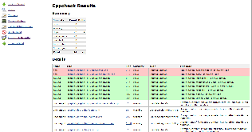
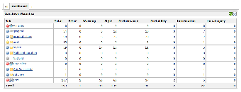
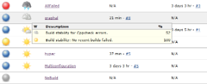
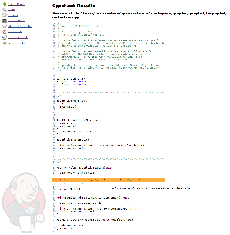
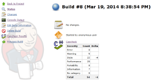
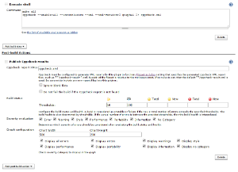

Plugin Information |
|---|
View Cppcheck on the plugin site for more information. |
Description
The Cppcheck plug-in scans for Cppcheck report files in the build workspace and reports the issues detected during static C/C++ code analysis.
The following features are provided by this plug-in:
- Configuration of the files to scan after a build, build status evaluation and graph.
- Trend reports showing the number of detected issues per type.
- Results summary and results details including new issues and solved issues.
- Listing of source code with highlighted issues.
- Show all violations highlighted on a single page.
- Dashboard View portlet showing number of issues per job.
- Remote access API (REST API).
- Works with most project/job types.
Please use the Mailing Lists or issue tracker to ask questions, create feature request or bug reports.
Screenshots
Version 1.15, 1.16.
|  |  |  |  |
|  |  |  |  |
Usage
- Install Cppcheck tool to the system. If you use master Jenkins server and several build slaves, install it to all slaves that will run the analysis.
- For each job configuration page:
- Add Execute shell build step to generate Cppcheck report or create the report file in your build scripts (Ant, Maven, Make, ...).
- Activate Publish Cppcheck results in Post-build Actions and provide at least the path to the generated Cppcheck report (cppcheck.xml).
- Optionally configure build status evaluation (Advanced button).
- Optionally configure graph (second level Advanced button).
- Always prefer new XML version 2 for the output format. XML version 1 is supported in the plugin too, but Cppcheck doesn't report some issues with the legacy format.
# Minimal set of arguments cppcheck --xml --xml-version=2 SOURCE_DIRECTORY 2> cppcheck.xml # Enable all checks cppcheck --enable=all --inconclusive --xml --xml-version=2 SOURCE_DIRECTORY 2> cppcheck.xml # Analysis in multiple parallel threads cppcheck -j 4 --enable=all --inconclusive --xml --xml-version=2 SOURCE_DIRECTORY 2> cppcheck.xml

Report in a sub-directory of the workspace (advanced)
The plugin expects that all paths in the input report file (cppcheck.xml) are relative to the workspace root directory. If the Cppcheck tool is executed from a sub-directory, the plugin will be unable to pair the paths in the report with the files on disk and the source codes with the highlighted errors won't be available in the details.
# In the workspace root directory cd SUBDIRECTORY cppcheck --enable=all --inconclusive --xml --xml-version=2 INPUT_DIRECTORY 2> cppcheck.xml
See the warning in the Console Output below. The invalid absolute path is missing SUBDIRECTORY between workspace and INPUT_DIRECTORY directories.
[Cppcheck] Starting the cppcheck analysis. [Cppcheck] Processing 1 files with the pattern '**/cppcheck.xml'. [Cppcheck] [WARNING] - The source file 'file:/SHORTENED/work/jobs/JOB_NAME/workspace/INPUT_DIRECTORY/mainwindow.cpp' doesn't exist on the slave. The ability to display its source code has been removed. ...
There are basically two solutions for this issue. The first one is to execute the Cppcheck analysis directly from the workspace root directory to make SUBDIRECTORY part of the path.
# In the workspace root directory # cd SUBDIRECTORY # cppcheck --enable=all --inconclusive --xml --xml-version=2 INPUT_DIRECTORY 2> cppcheck.xml cppcheck --enable=all --inconclusive --xml --xml-version=2 SUBDIRECTORY/INPUT_DIRECTORY 2> SUBDIRECTORY/cppcheck.xml
But the above solution is not much suitable for larger projects that are using for example recursive GNU/Make based build scripts where the Cppcheck analysis is executed for each sub-project (sub-directory). It is better to modify the paths in the report files after they are created.
# In the workspace root directory cd SUBDIRECTORY cppcheck --enable=all --inconclusive --xml --xml-version=2 INPUT_DIRECTORY 2> cppcheck.xml sed -i 's%\(<location file="\)%\1SUBDIRECTORY/%' cppcheck.xml
The sed command above adds "SUBDIRECTORY/" to the beginning of the paths in the location elements. Note this method is not limited only to sed, you can use whatever tool that is able to replace string in a file.
<location file="INPUT_DIRECTORY/mainwindow.cpp" line="1134"/> <location file="SUBDIRECTORY/INPUT_DIRECTORY/mainwindow.cpp" line="1134"/>
Remote access API (REST API)
Use the URLs below to access the Cppcheck specific data.
Description of possibilities
Data
- http://SERVER/job/JOB_NAME/BUILD_NUMBER/cppcheckResult/api/xml
- http://SERVER/job/JOB_NAME/BUILD_NUMBER/cppcheckResult/api/json
- etc.
Example of XML data:
<cppcheckStatistics> <numberErrorSeverity>0</numberErrorSeverity> <numberInformationSeverity>7</numberInformationSeverity> <numberNoCategorySeverity>0</numberNoCategorySeverity> <numberPerformanceSeverity>20</numberPerformanceSeverity> <numberPortabilitySeverity>0</numberPortabilitySeverity> <numberStyleSeverity>22</numberStyleSeverity> <numberTotal>54</numberTotal> <numberWarningSeverity>5</numberWarningSeverity> </cppcheckStatistics>
Example of JSON data:
{
"numberErrorSeverity" : 0,
"numberInformationSeverity" : 7,
"numberNoCategorySeverity" : 0,
"numberPerformanceSeverity" : 20,
"numberPortabilitySeverity" : 0,
"numberStyleSeverity" : 22,
"numberTotal" : 54,
"numberWarningSeverity" : 5
}
Known Issues
Changelog
Release 1.25 (Aug 17, 2019)
- Implemented:
JENKINS-58881 - Support Java 11 Closed
- Fixed:
JENKINS-41704 - Clicking On `Cppcheck Results` From A Multi-Branch Pipeline Build Results In javax.servlet.ServletException: org.apache.commons.jelly.JellyTagException Resolved
Release 1.24 (Sep 12, 2018)
- Fixed:
Release 1.23 (Jul 30, 2018)
- Fixed:
- Fixed:
- Fixed:
Release 1.22 (Jul 10, 2018)
- Implemented: JENKINS-35096 - Basic Pipeline support
- Fixed: JENKINS-42727 - Waiting for checkpoint on concurrent build
Release 1.21 (Aug 5, 2015)
- Implemented: pull request - Expand environment variables in the report file pattern
Release 1.20 (Sep 27, 2014)
- Fixed: JENKINS-24834 - CPP check report background colours not displaying for new or resolved issues since upgrade
- There was an incompatible change in Jenkins core, since version 1.581.
- Fixed: JENKINS-24037 - CPPCheck Plugin: You need "worspace" message instead of "workspace"
- Implemented: JENKINS-24007 - Put a warning about report in legacy format to build log
- Implemented: JENKINS-23247 - Display trends graph last 10/20 sucessful/fail builds in CPPcheck plugin.
- Number of builds displayed in the trend graph can be limited in configuration.
- Destination of several labels in configuration fixed (on click action).
Release 1.19 (Jul 27, 2014)
- Fixed: JENKINS-23185 - Setting build status to FAILURE for new error when errors were fixed
- Implemented: JENKINS-23888 - Add query parameter support for filtering errors based on new, resolved or unchanged
- Implemented: JENKINS-23891 - Redesign of configuration page
- Implemented: JENKINS-23575 - Post-Build-Step "Publish Cppcheck results" not available in job generator project
- Rejected: JENKINS-17450 - "warning" and "performance" not counted
Release 1.18 (May 25, 2014)
- Partially fixed: JENKINS-22823 - Cppcheck plugin can't connect to report file
- Partially fixed: JENKINS-11354 - CppCheck plugin cannot find CppCheck report
- Issues with legacy Java 1.5.
- Implemented: JENKINS-22965 - Cppcheck plugin shall display the inconclusive messages
- Implemented: JENKINS-23086 - Cppcheck plugin shall display verbose information
Release 1.17 (May 18, 2014)
- Release process failed, skipping this version.
Release 1.16 (April 30, 2014)
- Implemented: JENKINS-18109 - Show all violations highlighted on a single page
- Implemented: JENKINS-22388 - Possible to move cppcheck summary into main job hudson page?
- Implemented: JENKINS-22784 - Color palette for lines in the graph
- Rejected: JENKINS-22554 - Resolve files with relative paths
- Rejected: JENKINS-22761 - Missing links to source in cppcheck plugin
- Wiki: New section "Report in a sub-directory of the workspace (advanced)" added.
Release 1.15 (March 22, 2014)
- Fixed: JENKINS-17363 - Ludicrously slow load time (with lazyloading)
- Fixed: JENKINS-19437 - Implement load on demand functionality in Cppcheck
- Fixed: JENKINS-22073 - ProjectAction should render graph, optimize build.xml size
- Changes in data storage that heavily reduces memory consumption and increases performance during a common Jenkins use.
- Stored data now contains only statistics per type (just several numbers), full report is lazy-loaded only while it is needed in the results page. Compare with parsing of a giant XML that contains all information about each issue detected by Cppcheck and multiply by number of builds just to show a simple trend graph.
- Data format is very different but the code should satisfy a backward compatibility.
- The plugin update will have full impact after all builds from a previous version will completely role out and only new data are present.
- Fixed: JENKINS-17450 - "warning" and "performance" not counted
- Fixed: JENKINS-18029 - Selected line with static analysis violation is hidden because breadcrumb covers it
- Fixed: JENKINS-17540 - ConversionException reading build.xml
- Fixed: JENKINS-21346 - Not working with cppcheck 1.63
- Fixed: JENKINS-22114 - When looking at the source code of an error - the latest source is used
- Fixed: JENKINS-7279 - cppcheck plugin will not show results for multiconfiguration project
- Fixed: JENKINS-22214 - Fix findings from FindBugs static analysis
- Fixed: JENKINS-22213 - Broken backward compatibility with version 1.14
- Implemented: JENKINS-22215 - Side panel menu is missing on pages with listing of source codes
- Implemented: JENKINS-21928 - Redesign of results page
- Implemented: JENKINS-21927 - Redesign of build summary page
- Implemented: JENKINS-10651 - Add cppcheck to "Dashboard View"
- Implemented: JENKINS-14481 - Quickly identify only the new errors
- Rejected: JENKINS-21714 - More data from REST API
- Rejected: JENKINS-16700 - Parsing throws exceptions. javax.xml.bind.UnmarshalException
- Rejected: JENKINS-20894 - When the upstream build fails,it won't show cppcheck test results
- All existing Jira tasks with Resolved status checked, optionally tested and closed.
- Description, Screenshots, Usage, Remote access API and Known Issues sections added to wiki.
Release 1.14 (October 7, 2013)
* Add option to not fail builds if a report is not found.
Release 1.13 (December 19. 2012)
* Fix JENKINS-14908 - Enable Maven project support.
Release 1.12 (November 12, 2012)
* Fix JENKINS-15707 - Cppcheck Trend graph is blank even though the plugin processes stats correctly
Release 1.11 (November 04, 2012)
* Fix JENKINS-15523 - cppcheck: WARNING: Failed to resolve class
Release 1.10 (July 18, 2012)
* Fix internal error by computing between newError and previousError: wrong inverse between performance severity and information severity
Release 1.9 (May 5, 2012)
* Fix JENKINS-13657 - Cppcheck does not work with the "Flexible Publish Plugin"
Release 1.8 (May 1, 2012)
* Fix JENKINS-13589 - Calculation errors of threshold crossing
Release 1.7 (April 22, 2012)
* Fix JENKINS-12364 - Cannot drill down to source code with cppcheck when build source is checked out using SVN
Release 1.6 (April 21, 2012)
* Fix JENKINS-11114 - Separate errors report on build report page by severity type.
Release 1.5 (April 21, 2012)
* Fix reopened JENKINS-10368 - Wrong image dimension for Cppcheck Results link on Dashboard
Release 1.4 (April 20, 2012)
* Fix JENKINS-12504 - cppcheck-plugin doesn't display the latest source when cppcheck-plugin is the cause of a build failure
Release 1.3 (April 18, 2012)
* Fix JENKINS-12301 - Cppcheck always display all errors
* Fix JENKINS-12382 - Typo with displayed text for cppcheck plugin configuration in Jenkins
Release 1.2 (February 06. 2012)
* Merge pull request - Add a link to the line number
Release 1.1 (January 01, 2012)
* Fix reponed JENKINS-11096 - No cppcheck reports found if they stored in workspace
* Fix reponed JENKINS-11065 - Add cppcheck version to the result page
Release 1.0.2 (September 28, 20111
* Fix JENKINS-11096 - No cppcheck reports found if they stored in workspace
Release 1.0.1 (September 20, 2011)
* Fix JENKINS-9178 - Cppcheck plugin missing files if used by a matrix project
Release 1.0.0 (August 01, 2011)
* Fix JENKINS-10369 - CppCheck results missing File and line num when xml-version=2 is used
* Fix JENKINS-9727 - CPP Check should support new xml output format (version 2)
This new version supports the new Cppcheck output format (version 2).
For old output, the new mapping is:
New Category | Old Category |
|---|---|
error | error |
warning | possible error |
style | style |
performance | possible style |
information | no category |
Release 0.17 (June 17, 2011)
* Fixed JENKINS-9727 - Add Cppcheck version 2 support
* Updrade the dependency of Ivy pluign to 1.19
Release 0.16 (June 15, 2011)
* Fixed JENKINS-9726 - Cannot handle empty files
Release 0.15 (March 23, 2011)
* Rerelease 0.14 to properly set required Jenkins version
Release 0.14 (March 12, 2011)
* Fixed JENKINS-8559 - CppCheck links to last success or unstable build, even when the current build fails due to CppCheck errors
Release 0.13 (Feb 27, 2011)
* Fixed JENKINS-6990 - List of files not correctly displayed when providing several XML files.
Release 0.11 (Feb 21, 2011)
* Fixed JENKINS-8668 - Publish cppcheck results option not available in Ivy project
* Updated to Jenkins 1.397 API and metadata
Release 0.10.3
* Fixed JENKINS-7448
Release 0.10.2
* Fixed a java.lang.NullPointerException when the file attribute for an error is not specified.
Release 0.10.1
* Integrated JENKINS-6862 fix
Release 0.10
* Fixed JENKINS-6046
* Fixed JENKINS-5983
* Added restriction to view sources only to users who has the 'WORKSPACE' permission.
Release 0.9
* Added backward compatibility with the cppceck plugin 0.6 (except to display source code)
* Added a notification in the updateable list of plugins if a version of the plugin before version 0.7 was installed.
Release 0.8
* An empty source file or a directory as a the value of the file attribute are managed for the cppcheck result file
Release 0.7
* Added the ability to display cppcheck trend for each severity and the sum of all severities
* Fixed JENKINS-4322 (Added the ability to reach source files on a slave node)
Note : this version requires Hudson 1.321+.
Release 0.6
* Some check boxes has been introduced to select the severities for build health
* Migrated to the cppcheck release (1.35)
- The "all" severity is renamed to "possible error"
- The "all style" severity is renamed to "possible style"
Release 0.5.2
* Fixed building on slaves (java.io.NotSerializableException: java.io.PrintStream)
Release 0.5.1
* Spelling correction
Release 0.5
* Added remote API for the plug-in results
Release 0.4
* Correction of the ambiguity of the analysis of workspace and module roots
Release 0.3
* Collecting multiple analysis files
Release 0.2
* Added the ability to go through source code
* Added the ability to configure the build status and health
Release 0.1
* Initial Release
{kind=link}
{kind=link}
{kind=link}
{kind=link}
{kind=link}
{kind=link}
{kind=link}
{kind=link}
{kind=link}
{kind=link}
{kind=link}
{kind=link}
{kind=link}
{kind=link}
{kind=link}
{kind=link}
{kind=link}
{kind=link}
{kind=link}
{kind=link}
{kind=link}
{kind=link}
{kind=link}
{kind=link}
{kind=link}
{kind=link}
{kind=link}
{kind=link}
{kind=link}